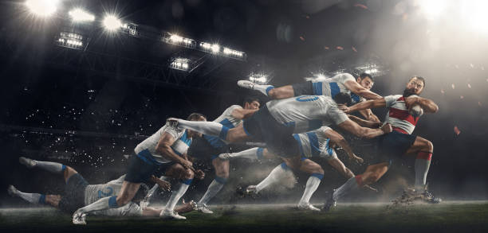

|
Rugby Union Copa do Mundo de Rugby (Rugby World Cup): Este é o evento mais prestigiado do rugby union, realizado a cada quatro anos. As melhores equipes nacionais competem pelo título de campeão mundial. O torneio é organizado pela World Rugby e apresenta equipes de todo o mundo. Six Nations Championship: das competições mais tradicionais e prestigiadas do rugby union, o Six Nations é disputado entre seis nações europeias: Inglaterra, França, Irlanda, Itália, Escócia e País de Gales. As equipes jogam entre si em um formato de todos contra todos, buscando o título de campeão das Seis Nações. Rugby Championship: Esta é uma competição anual que envolve as principais equipes do Hemisfério Sul: Nova Zelândia, Austrália, África do Sul e Argentina. Os times competem em uma série de jogos de ida e volta, disputando o título de campeão do Rugby Championship.

Rugby League NRL (National Rugby League): A NRL é a principal liga de rugby league do mundo e é conhecida por sua competição de alto nível. As equipes australianas jogam uma temporada regular seguida por uma série de playoffs, culminando na grande final para determinar o campeão da NRL. Super League: Esta é a principal competição de rugby league na Europa, envolvendo equipes do Reino Unido e da França. Times como Wigan Warriors, St. Helens, Leeds Rhinos e Catalans Dragons competem pela supremacia na Super League. State of Origin: Um dos eventos mais emocionantes do rugby league, o State of Origin, acontece anualmente na Austrália. Envolve jogadores representando os estados de Queensland e New South Wales em uma série de três jogos altamente competitivos que capturam a paixão e a rivalidade do rugby league australiano. Além desses eventos principais, há várias outras competições nacionais e internacionais de rugby, torneios de sevens (uma variação do rugby com sete jogadores em cada equipe), jogos amistosos entre países e campeonatos regionais que oferecem oportunidades para os fãs desfrutarem do esporte e para os jogadores demonstrarem seu talento em nível internacional. É importante para os fãs de rugby acompanhar o calendário desses eventos para não perderem a ação emocionante e os momentos memoráveis que acontecem ao longo do ano. As competições oferecem uma mistura de habilidades, rivalidades intensas e uma chance de ver as melhores equipes e jogadores do mundo competindo no mais alto nível do esporte. |